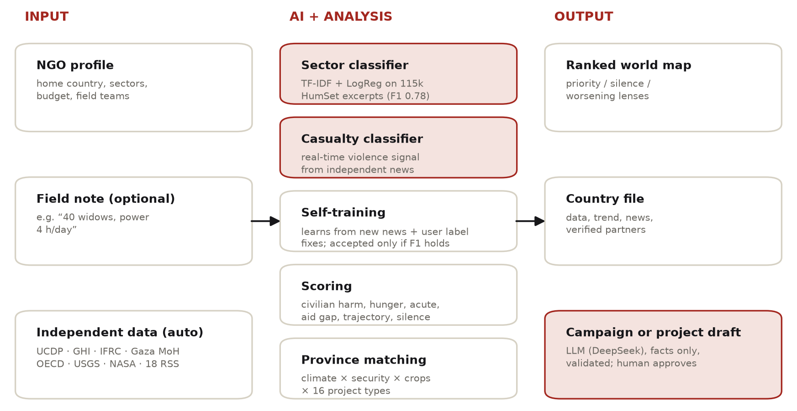
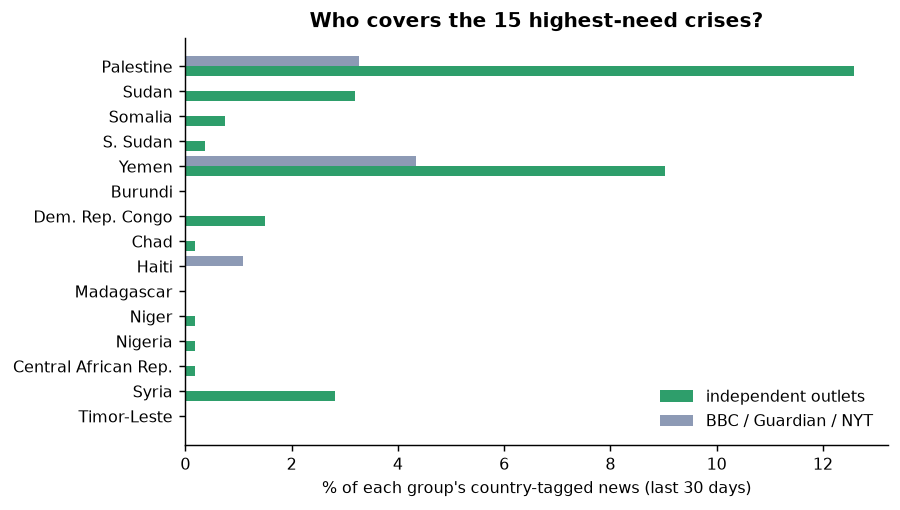
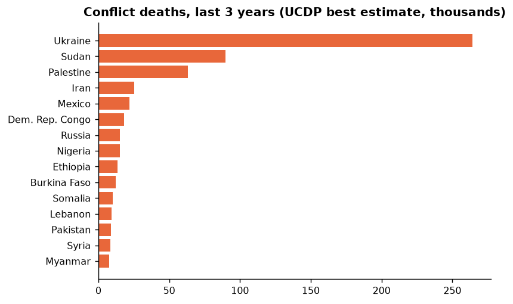

STK Asistanı: An AI Crisis Monitor that Directs NGO Aid to Urgent and Under-Reported Crises Using Independent Data
STK Asistanı ("NGO Assistant") helps NGOs anywhere in the world decide where to run their next aid campaign, what it should contain and with whom to partner; its first pilot users are small and medium-sized NGOs in Türkiye (STK, hence the name), and any NGO can set its own home country and sectors. It reads independent data and news every day, classifies reports into humanitarian sectors with a self-updating machine-learning model, and ranks crises against the NGO's own sectors on an interactive world map. For each country it shows a transparent score breakdown, the trend, verified local partners (Red Crescent / Red Cross) and province-level sustainable project ideas. A silence lens surfaces crises that mainstream Western media ignore. An LLM (DeepSeek) is integrated to draft campaigns from verified facts only; until the API key is configured the prototype uses a template, and the live LLM is evaluated in Assignment 2.

Most NGOs are small and cannot follow dozens of crises, so campaigns follow the news cycle, which is uneven. In our 30-day sample, 38% of the country-tagged world news of BBC, The Guardian and NYT concerned Ukraine and Russia, and 0% Sudan, DR Congo or Somalia, although Sudan recorded 89,846 conflict deaths in three years (UCDP). Data infrastructure is uneven too: in a first version built on a single institutional data ecosystem, Gaza was under-ranked because of uncounted populations and conflicts not counted as acute. We therefore use multiple independent sources and never treat missing data as "no need". NLP makes automation feasible: HumSet (Fekih et al., 2022) provides 148k expert-labelled humanitarian excerpts for training.
| Source (publisher) | Content | Role |
|---|---|---|
| HumSet (DEEP / Data Friendly Space) | 148,621 excerpts, EN/FR/ES, expert sector labels | classifier training |
| UCDP GED + 2026 candidate (Uppsala Univ.) | 210,115 violent events, 2016 – Aug 2026 | conflict, civilian deaths, trends |
| Tech for Palestine (Gaza Ministry of Health) | daily casualties; 74,392 killed, 463 starvation deaths | Palestine casualties, hunger |
| Global Hunger Index 2026 (Concern, WHH) | 130 countries (8 provisional) | hunger, vulnerability |
| IFRC GO (Red Cross / Red Crescent) | 164 active appeals; 220 national societies | funding gap, partners |
| OECD DAC2A | humanitarian aid per recipient, 2022–2024 | aid per person in need |
| USGS, NASA EONET, Open-Meteo, Natural Earth | hazards; climate, elevation, provinces, population | acute need, project matching |
| 18 RSS feeds (15 independent + BBC/Guardian/NYT) | news, accumulated daily | live signal, attention gap |


EDA insights. Ukraine, Sudan and Palestine are the deadliest conflicts; 44 countries have a "serious" or worse hunger score; Red Cross / Red Crescent appeals are 51% funded. Civilian harm and conflict intensity correlate (Spearman ρ = 0.91) but are both kept: they answer different questions (only 3% of recorded deaths in Ukraine are civilians). The Western news sample is still small (90 items) and grows daily.
| HumSet test set (12,384 excerpts) | micro-F1 | macro-F1 |
|---|---|---|
| Keyword rules (baseline) | 0.558 | 0.539 |
| TF-IDF + logistic regression | 0.780 | 0.740 |
| Casualty / displacement model | 0.662 | 0.640 |
github.com/tunabilgen/stk-asistani.data/final/country_crisis_dataset.csv (177 × 38) with a data dictionary, and every preprocessing step with outputs in notebooks/01_dataset_and_preprocessing.ipynb; extended methods in docs/concept_note_extended.pdf.